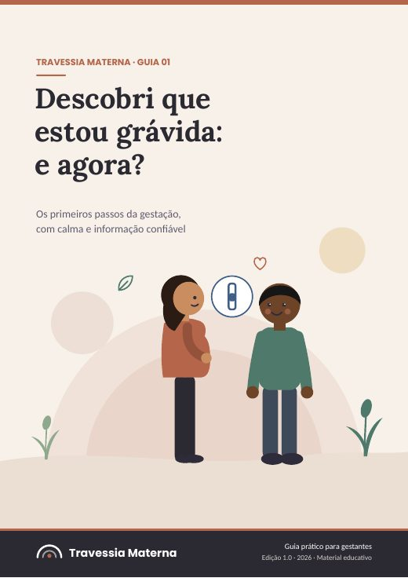
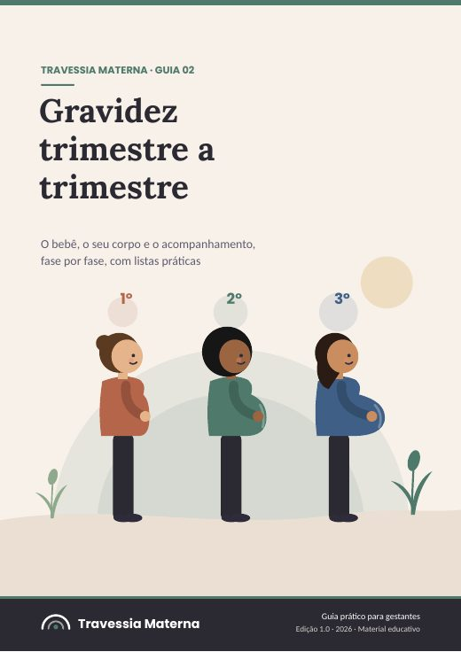
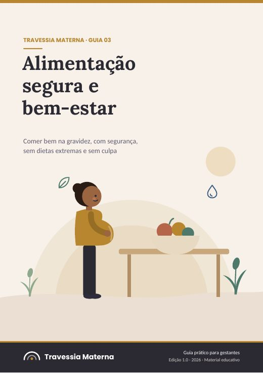
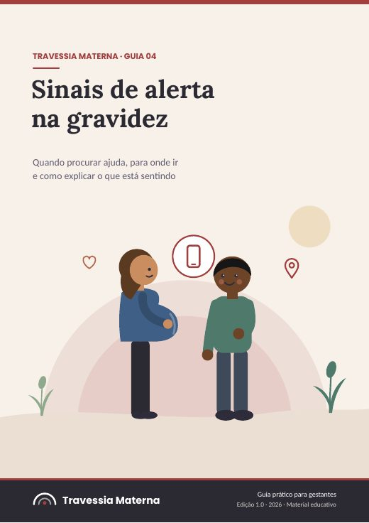
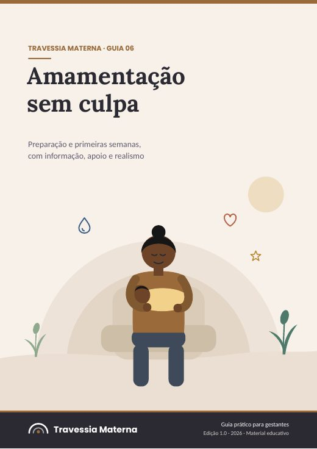
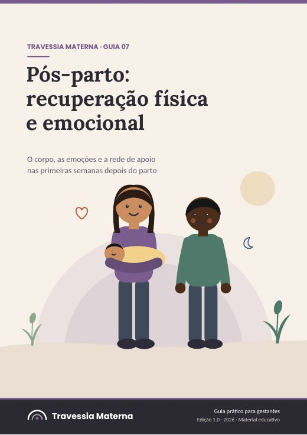
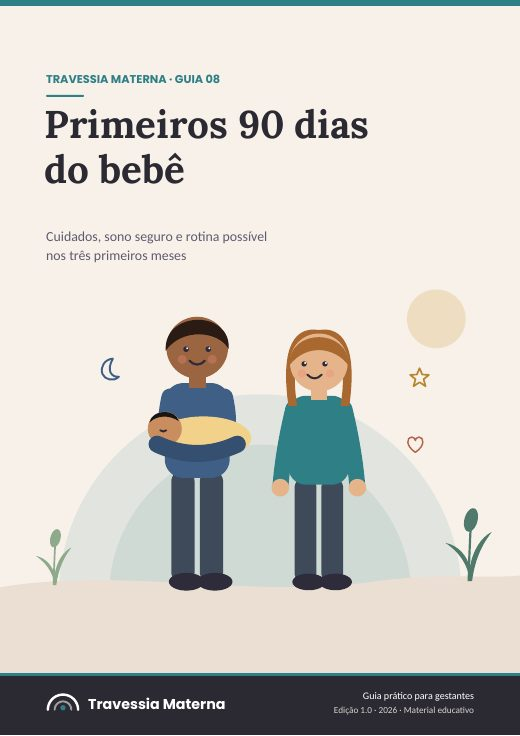

Outros guias da Travessia Materna

Descobri que estou grávida: e agora?R$ 19,90

Gravidez trimestre a trimestreR$ 24,90

Alimentação segura e bem-estar na gravidezR$ 24,90

Sinais de alerta na gravidez: quando procurar ajudaR$ 24,90

Amamentação sem culpa: preparação e primeiras semanasR$ 24,90

Pós-parto: recuperação física e emocionalR$ 24,90

Primeiros 90 dias do bebê: cuidados, sono e rotinaR$ 24,90

Meu bebê não dorme e eu estou exaustaR$ 37,00

Estou grávida e com medo de que algo dê erradoR$ 37,00

O pós-parto que ninguém me contouR$ 37,00

Como preparar a chegada do bebê sem gastar uma fortunaR$ 37,00